FAMOUS BRISTOL PIECES
The native town of world famous graffiti artist Banksy, Bristol attracts young creative people from all around the world. In summer Europe’s largest festival takes place in the city, where artists are invited to paint live in the neighborhoods of Bedminster and Southville.
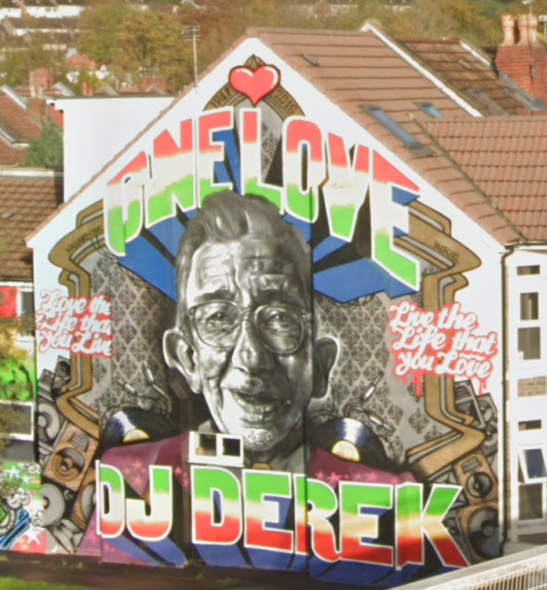
 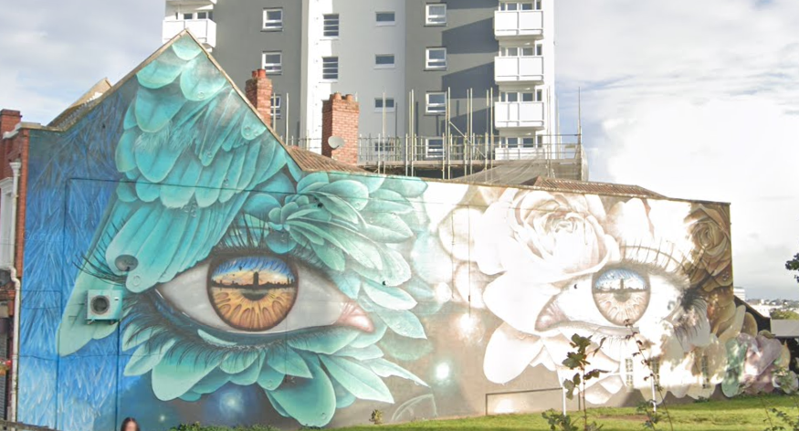
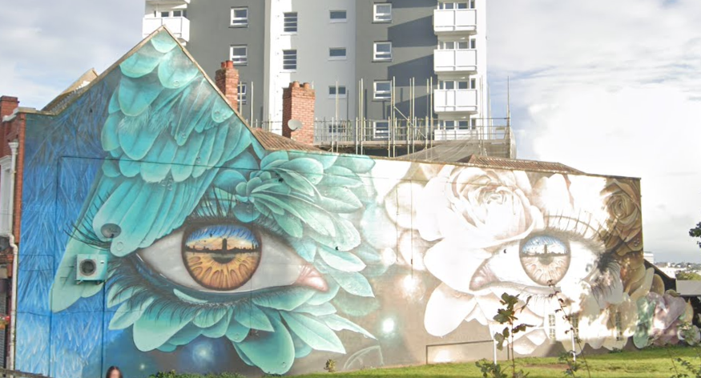
 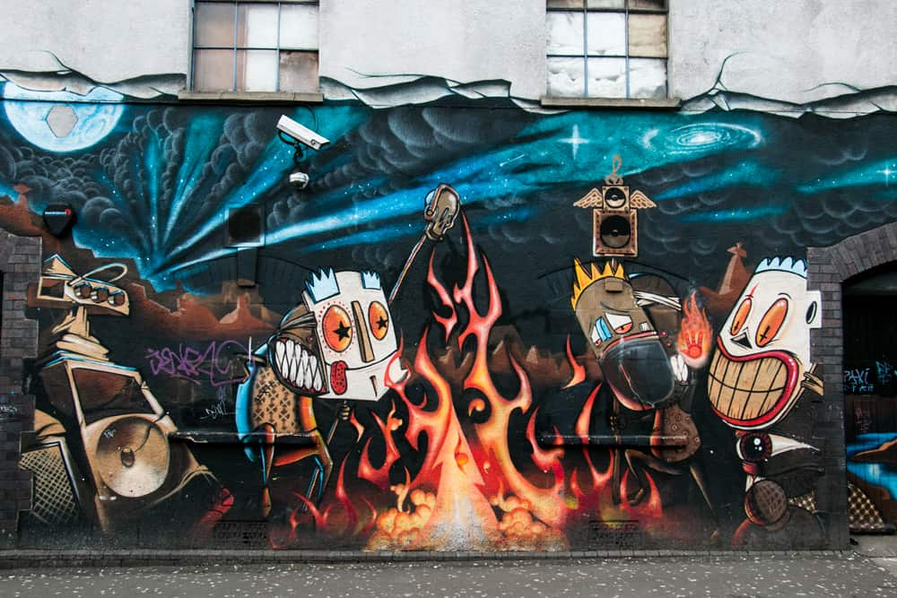
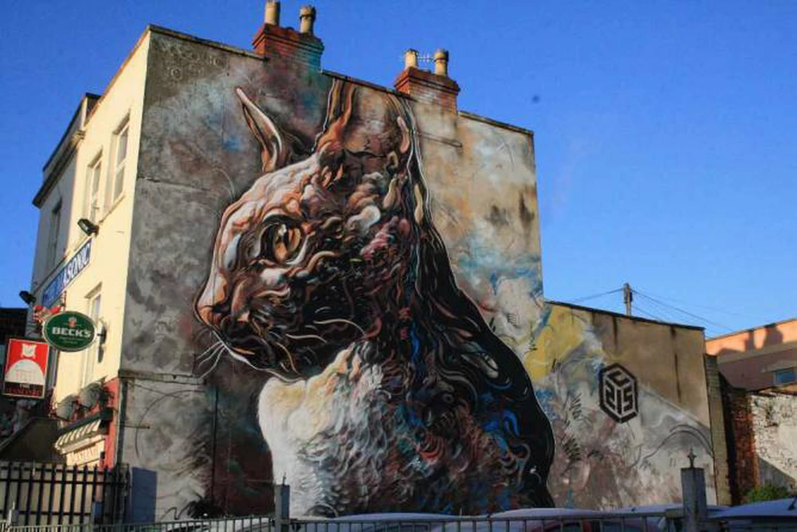
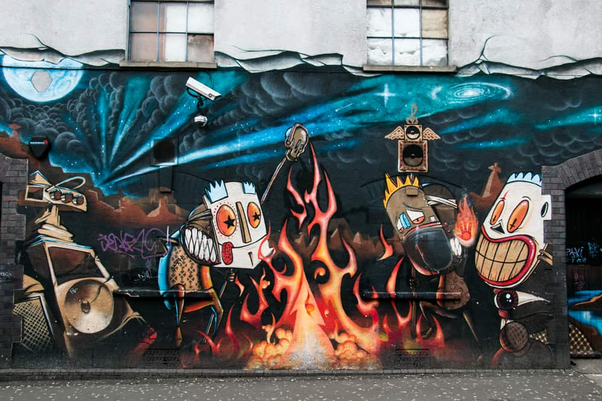
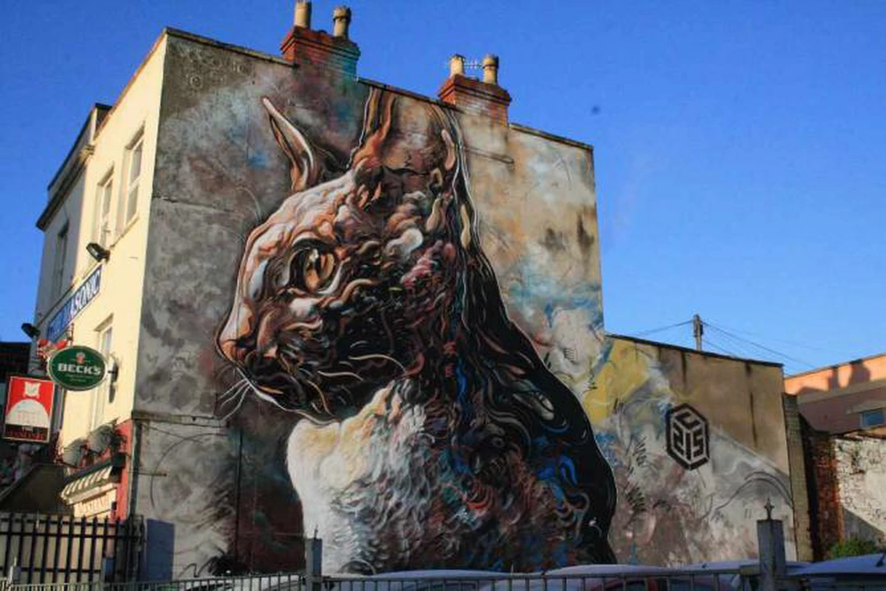
FAMOUS MELBOURNE PIECES
The town is a graffiti capital in Australia apparently. Recently it has been attracting the world-wide attention to its street art: the city attracts people from all around the globe, therefore they develop a really unique style.
 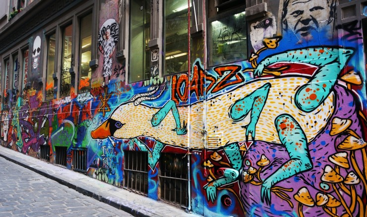
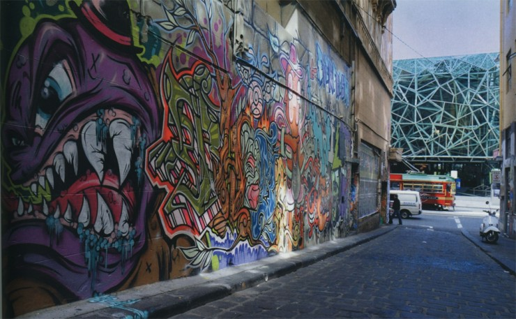
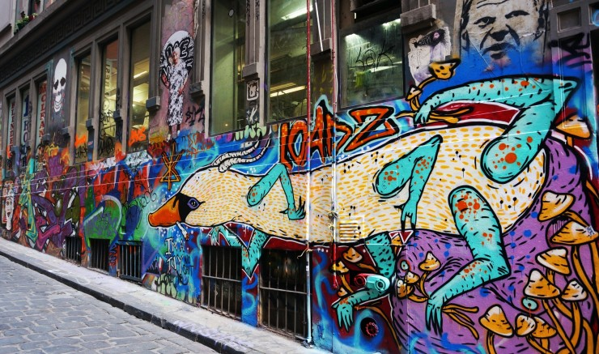
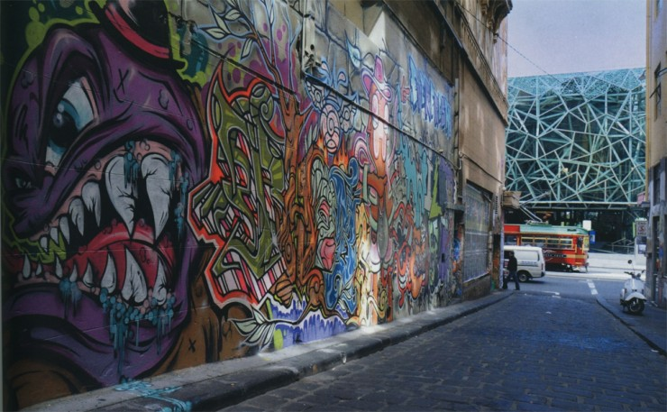
 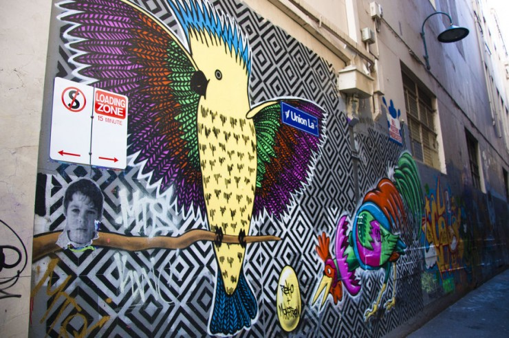
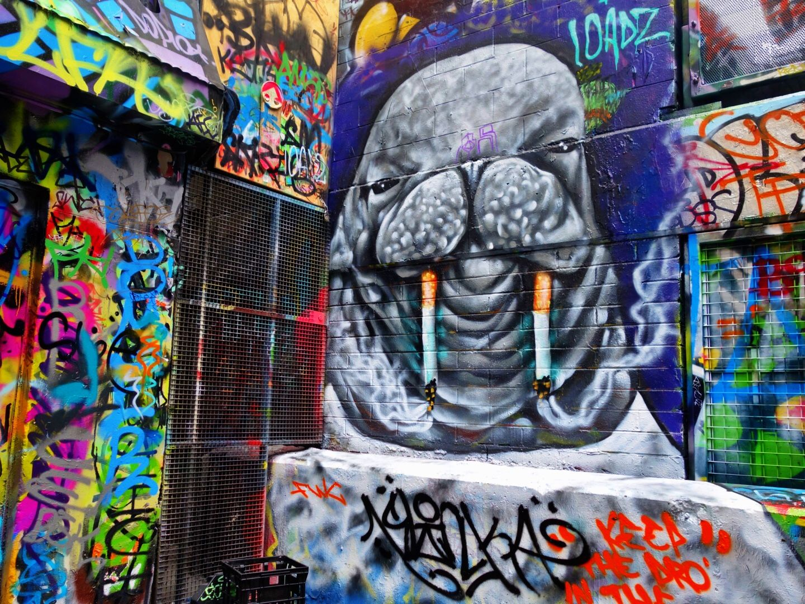
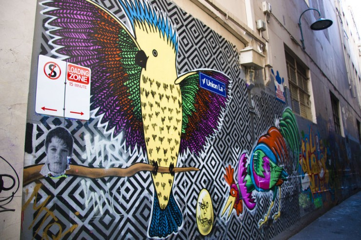
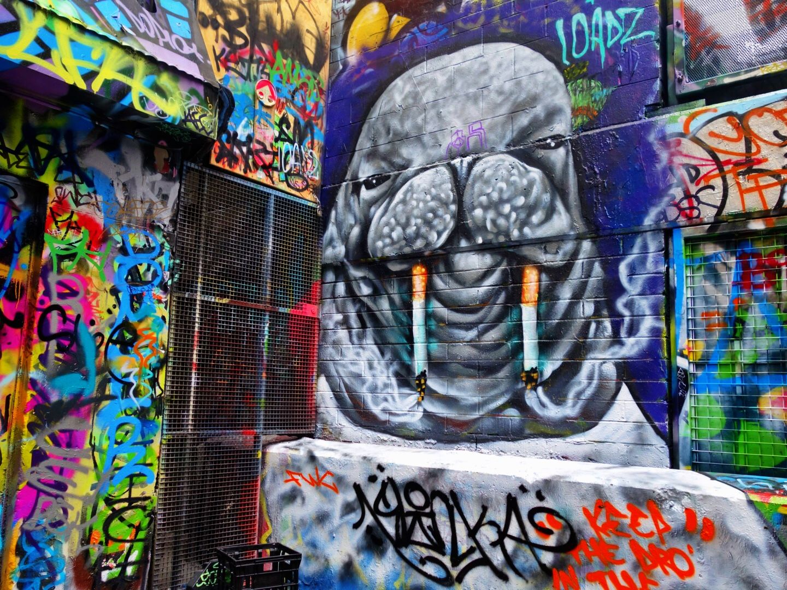
FAMOUS NYC PIECES
The cultural center of the world – the town produces the latest trends, genres and styles, while the rest of the world follows. So you can bet that you can find some of the most exquisite and unique street art in here.
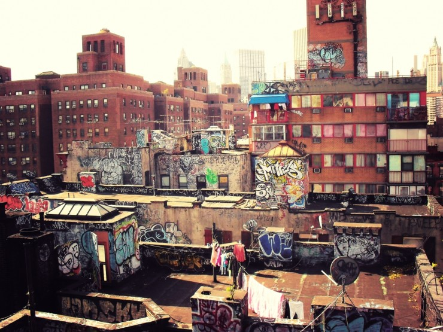
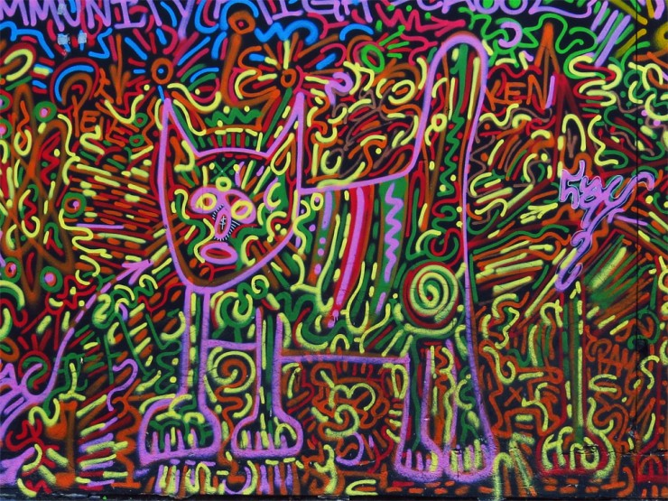
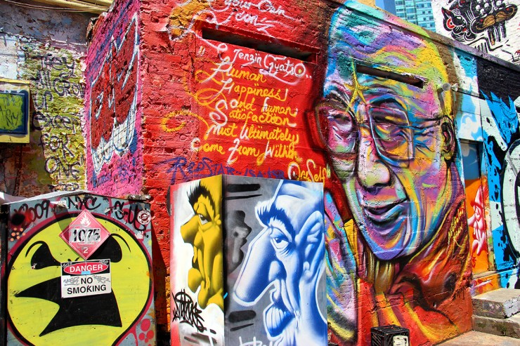
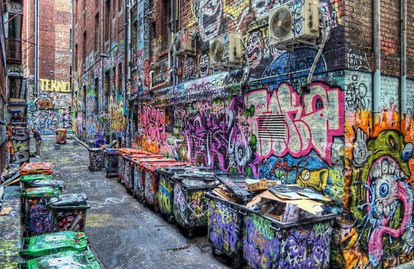
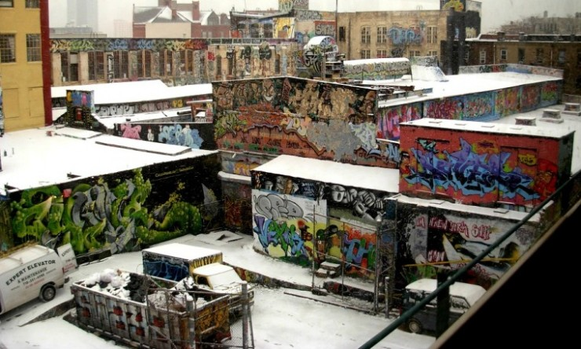